Optagelsesprøve til de gymnasiale uddannelser
Fredag den 13. juni 2025
Kl. 10.00-14.00
Du har i alt 4 timer til prøven. Du bestemmer selv, i hvilken rækkefølge du besvarer opgaverne, og hvor lang tid du bruger på opgaverne i hvert fag.
Det er ikke tilladt at bruge internettet som fagligt hjælpemiddel eller foretage søgninger på
internettet, fx ved hjælp af Google.
Det er ikke tilladt at kommunikere med omverdenen.
Det er tilladt at benytte alle øvrige hjælpemidler, fx lærebøger, formelsamlinger, lommeregner, ordbøger, grammatiske oversigter og noter. Disse hjælpemidler kan enten medbringes på computeren eller på papir. Skolen kan tillade, at ordbøger tilgås via internettet.
Din besvarelse skal afleveres i et samlet dokument. Når du er klar til at aflevere din besvarelse, skal du gøre følgende:
- Tryk på knappen ’Dan og gem pdf’ i menuen i venstre side.
- Navngiv din besvarelse ’Optagelsesprøve’ og gem dokumentet på din computer.
- Aflever din besvarelse i Netprøver.
Optagelsesprøven er i udgangspunktet anonym for dem, som skal bedømme din besvarelse. Det er derfor vigtigt, at du ikke skriver dit navn noget sted i besvarelsen eller i titlen på dit dokument, som du afleverer i Netprøver.
Dansk
Prøven i dansk består af tre delprøver:
- Den første delprøve er en læsefærdighedsprøve, der består af to tekster. Til hver af de to tekster er udarbejdet 10 opgaver. Alle opgaver skal besvares.
- Den anden delprøve er en grammatisk færdighedsprøve, hvor teksten skal omskrives i tid.
- Den tredje delprøve er en skriftlig færdighedsprøve.
Du kan højst få 25 point i danskprøven:
| Opgave | Antal mulige point |
|---|---|
| Læsefærdighed | 12 point |
| Grammatisk færdighed | 6 point |
| Skriftlig færdighed | 7 point |
Dansk
Læsefærdighed - Tekst 1
Til teksten er udarbejdet 10 opgaver. Der er kun ét rigtigt svar til hver opgave.
For at opnå 12 point i den samlede læsefærdighedsprøve (tekst 1 og 2) skal mindst 18 af de i
alt 20 opgaver i prøven være korrekt besvaret.
Kan man stjæle noget, uden at man ved det?
Af Christina Hesselholdt
Min veninde spiser meget slik. Sommetider om aftenen, når jeg ringer til hende, kan jeg
næsten ikke høre, hvad hun siger, for gumleriet. En morgen sendte hun mig et foto af sin
dyne, der var indsmurt i chokolade. Hun var faldet i søvn med en chokoladeskildpadde i
hånden, skrev hun.
Hun går tidligt i seng. Hvis hun ikke har slik i huset,
spiser hun mandler. Eller hun knapper en frakke over pyjamassen, tager bilen og kører
til den nærmeste tankstation og tanker op med chokolade. Men hun skal passe på. Hendes
kolesteroltal er for højt. Så sommetider erstatter hun chokoladen med lakrids.
Jeg er kogebogsforfatter. Jeg har forsøgt at give min
veninde nogle opskrifter på nem og sund mad, men hun er ikke interesseret.
Nu nærmer påsken sig. Der er store mængder af påskeæg i
alle
supermarkeder. Jeg er taget på besøg hos min veninde. Vi sidder i hendes sofa og drikker
te. Det er eftermiddag. Pludselig lyser hendes ansigt op.
’Vi fik påskeæg på arbejde i dag – af lederen’, siger hun.
Hun tager sin taske og stikker hånden ned i den.
’Hvad?’ siger hun så og stikker også den anden hånd ned
i
tasken.
Et øjeblik efter dukker hendes hænder op af
tasken med hver
sit påskeæg. Hun betragter dem overrasket. Det er store gennemsigtige æg af plastic, der
er fyldt med slik. Jeg tænker, at det er nogle barnlige æg at give til voksne mennesker
på en arbejdsplads. Men det siger jeg ikke. Jeg siger: ’Har du fået to?’
’Det er forfærdeligt’, siger hun, ’nej, hvor er det pinligt.
Jeg er kommet til at tage en af mine kollegers påskeæg foruden mit eget’.
’Der var du heldig’, siger jeg, ’spis det’.
’Det kunne jeg da ikke drømme om’, siger hun, ’men hvordan
kunne det dog ske?’
Hun åbner det ene påskeæg ved at
skrue på midten, så det
bliver til to plasticskåle. Slikket må være fra en bland-selv-slikbutik. Hun rækker den
ene skål frem mod mig, og mens jeg tænker over, hvilket stykke jeg skal vælge, kaster
hun en håndfuld slik i munden og giver sig til at forklare mig, hvad der må være sket.
’Vi er tolv ansatte på kontoret’, siger hun, ’vores
leder
anbragte tolv påskeæg på et bord og ønskede os god påske’.
’Hov, vent’, sagde jeg, ’på hvilket bord?’
Jeg blev nødt til at få nogle flere detaljer for at kunne
forestille mig det. Mens hun sagde det, havde jeg set et klasselokale for mig, hvor
læreren anbragte tolv æg på katederet. Det var nok, fordi slikket var så
barnligt.
’Det var på spisebordet i vores frokoststue’,
sagde hun,
’men det er da fuldstændig ligegyldigt, hvor det var. Det vigtigste er, at nu er der en,
som ikke har fået et påskeæg med hjem’.
’Hvad tror du,
der er sket?’ spurgte jeg.
’Jeg har simpelthen taget to
påskeæg uden at tænke over
det’, sagde hun, ’altså først har jeg taget et påskeæg og lagt det ned i min taske. Og
så må jeg have taget et til lidt senere, fordi jeg havde glemt, at jeg havde taget det
første’.
’Hvad med den, der ikke fik noget påskeæg?’
spurgte jeg,
’blev vedkommende ikke sur? Undrede han eller hun sig ikke?’
’Ikke så vidt jeg så’, svarede hun.
’Jeg kommer i tanke om noget’, sagde jeg.
’Jeg afleverer det efter påske’.
’Skal vi vædde på, at du spiser det?’
’Hvad var det, du kom i tanke om?’ spurgte hun.
Jeg havde engang gjort noget lignende. Det var flere år siden. Mærkelig nok havde jeg vist ikke fortalt min veninde det. Vi fortæller ellers hinanden alt. Vi har kendt hinanden i over fyrre år, siden vi var tretten. Nu skulle hun bare høre.
’Det skete på en rejse’, begyndte jeg. ’En rejse til
Finland. Jeg kan stadig huske, hvor enormt hårdt flyets hjul forekom mig at ramme
landingsbanen. Flyet havde for meget fart på. Det virkede, som om det var ude af
kontrol. Jeg hagede mig fast til flysædet, mens flyet susede af sted og hoppede og
bumlede. Men det har ikke noget med historien at gøre.
Det var en arbejdsrejse. Min nye kogebog var blevet oversat
til finsk. Jeg var taget til Finland for at hjælpe til med at gøre reklame for
kogebogen, så der forhåbentlig blev solgt en masse eksemplarer.
Den sidste aften på rejsen, var jeg blevet inviteret til
middag på Den danske ambassade i Helsinki. For at fejre min kogebog. Min vegetariske
kogebog. Jeg var ligefrem æresgæst ved middagen. Det var meget fornemt. Det var også
meget mærkeligt. Det mærkelige var, at der blev serveret en masse kød til en middag, der
var en fejring af min kogebog med grønsagsretter.
Den
danske ambassadør var en frygtindgydende kvinde. Hun
lignede ikke én, der fandt sig i noget. Jeg blev en lille smule bange for hende, da hun
gav mig hånden ved min ankomst. Det var som at trykke en hånd af stål.
Vi gik til bords. Der var to gæster foruden mig. Der var
ham, som havde oversat min kogebog fra dansk til finsk. Og så var der en berømt finsk
digterinde. Mens vi sad og ventede på forretten, rakte digterinden to af sine
digtsamlinger til ambassadøren som gave. Ambassadøren blev meget glad. Meget mere glad
end hun var blevet for min kogebog, som jeg havde haft med som gave.
’Ihhh tak’, sagde ambassadøren på finsk til digterinden.
Oversætteren oversatte det for mig. Og derefter sendte ambassadøren digtsamlingerne
rundt, så vi alle sammen kunne mærke på dem og bladre lidt i dem. Jeg forstod ikke et
ord finsk, så jeg rakte dem hurtigt videre, mens jeg smilede og nikkede og sagde ’ihhh’.
Min kogebog var slet ikke kommet med til bords.
Ambassadøren
havde lagt den fra sig i et andet rum.
En tjener kom ind
med forretten. Den var anrettet på
tallerkener. Den bestod af tynde skiver rødt kød arrangeret i en cirkel. Midt i cirklen
lå der lidt revet peberrod. Jeg havde ikke spist kød i femogtyve år. Men ambassadøren
var ikke typen, der ville høre på beklagelser. Så jeg spiste alt det røde kød. Det vil
sige: jeg forsøgte at sluge det.
Så kom hovedretten. Det
var steg, også portionsanrettet. En
lille gulerod og en lillebitte kartoffel gjorde stykkerne af grå steg selskab på
tallerkenen. Min mave protesterede med høje lyde, mens jeg slugte stegen.
Efter desserten, som heldigvis var kødfri, rejste vi os alle
sammen. Vi skulle drikke kaffe i stuen ved siden af. Jeg blev stående et øjeblik og
støttede mig til bordet. Jeg havde fået mavepine. Foran mig lå digterindens bøger, som
ambassadøren havde efterladt på spisebordet. Så gik jeg ind til de andre i dagligstuen.
Jeg anbragte min taske ved siden af min stol. Min taske stod åben. Næste morgen kunne
jeg pludselig huske, at både ambassadøren, oversætteren og digterinden havde kigget så
mærkeligt på min taske. Men jeg tænkte ikke over det, mens vi drak kaffen.
Så var middagen forbi. Ambassadøren trykkede min hånd hårdt
til afsked. Der kom en taxa og kørte mig til mit hotel. Jeg gik ud som et lys, tung i
maven af alt det kød.
Det blev næste morgen. Jeg stak
hånden ned i min taske efter
min læbestift’.
’Og hvad tror du, min hånd stødte på nede i min taske?’
spurgte jeg min veninde.
’Det ved jeg ikke’, svarede hun
og hældte det sidste slik
fra påskeægget ned i sin hånd.
’De to digtsamlinger’,
sagde jeg, ’gaven til ambassadøren
fra digterinden. Jeg havde taget bøgerne med! Jeg havde lagt dem ned i min taske. Det
var derfor, at de alle sammen havde kigget så underligt på tasken’.
’Havde du taget dem, helt uden at du havde opdaget det?’
spurgte min veninde.
’Ja’, sagde jeg, ’ligesom du tog
påskeæggene uden at vide
det. Det var derfor, jeg kom i tanke om det. Åh, jeg skammede mig så frygteligt. Jeg
jamrede for mig selv på hotelværelset: Nu tror de, at jeg er en tyv. Og bøgerne var på
finsk, jeg kunne ikke engang læse dem! Hvorfor i alverden havde jeg taget dem? Jeg
fattede det ikke’.
’Hvad gjorde du så?’ spurgte min
veninde.
’Jeg ringede til ambassadøren og fortalte, at
jeg havde
taget bøgerne, uden at jeg selv vidste det’.
’Troede
ambassadøren på det?’ spurgte min veninde.
’Jeg sagde
til hende, at jeg var vegetar og nok var blevet
helt forvirret af alt det kød, hun havde serveret. Nå, det sagde hun ikke noget til. Men
vi aftalte, at jeg skulle efterlade bøgerne på hotellet. Så ville en fra ambassaden
komme og hente dem. Og jeg rejste hjem’.
’Skal vi
alligevel tage hul på det andet påskeæg?’ spurgte
min veninde.
(2024)
1. Hvilken type fortæller er der i teksten?
x
x
x
x
2. Hvad arbejder fortælleren som?
x
x
x
x
3. Hvad er venindens forklaring på, at hun har to påskeæg i tasken?
x
x
x
x
4. Hvad er fortællerens syn på venindens slikvaner?
x
x
x
x
5. Hvorfor rejser fortælleren til Finland?
x
x
x
x
6. Hvordan beskriver fortælleren den danske ambassadør i Finland?
x
x
x
x
7. Hvorfor er middagen hos ambassadøren ubehagelig for fortælleren?
x
x
x
x
8. Hvad betyder novellens sidste linje ’Skal vi alligevel tage hul på det sidste påskeæg?’ spurgte min veninde?
x
x
x
x
9. Hvad har historien om påskeæggene og historien fra Finland til fælles?
x
x
x
x
10. Man kan bedst beskrive novellens tema med ordet
x
x
x
x
Læsefærdighed - Tekst 2
Til teksten er udarbejdet 10 opgaver. Der er kun ét rigtigt svar til hver opgave.
For at opnå 12 point i den samlede læsefærdighedsprøve (tekst 1 og 2) skal mindst 18 af de
i alt 20 opgaver i prøven være korrekt besvaret.
Af Dorte Mosbæk
”Hun havde ’hele pakken’, men var ikke lykkelig. Så tog hun en drastisk beslutning”
Anna-Caroline Bonde Fosmark vekslede en (begivenhed, livskrise, oplevelse, sygdom) til en hverdag som cyklende nomade – uden slutdestination. Efter at have krydset både Danmark og Europa på cykel, har hun nu slået sig mere fast ned for at leve et minimalistisk liv i naturen, hvor hun føler sig mest lykkelig.
Anna-Caroline kommer ud ad åbningen i det store, beigefarvede glampingtelt på bare tæer med et lille spejl i hånden. Beklager, at hun kun har nået at få mascara på det ene øje. Hun kom sent i seng, fordi hun baksede med at slå (ordet, paraplyen, sedlen, teltet) op sammen med sin far.
Teltet ser ellers ud, som om det har været indrettet og beboet længe. En stor (hund, madras, reol, tallerken) på paller med et mønstret sengetæppe, lyskæder i loftet, små pynteting, en krystallampe og i det ene hjørne et staffeli og en masse malegrej.
Udekøkkenet med vask er næsten lige blevet færdigmonteret, og mellem nogle træer bag et naturhegn, hun selv har bygget, står et muldtoilet. Et lille, sammenfoldeligt solcellepanel hænger ned fra bordpladen og rammer en nogenlunde stabil (laserstråle, solstråle, urinstråle, vandstråle) mellem de ellers mange træer og buske på naturgrunden, hvor hun er ved at skabe sig en boplads.
Det er helt nyt for 25-årige Anna-Caroline at slå sig ned et sted. De seneste tre år har hun nemlig levet som (cyklende, dansende, løbende, syngende) nomade uden fast bopæl i længere tid ad gangen og for et minimalt husholdningsbudget.
“Jeg vidste godt, at jeg ikke kunne cykle rundt og leve så ekstremt minimalistisk for evigt, og da jeg fik problemer med knæene, blev jeg nødt til at gøre noget andet. Samtidig blev jeg mæt af at opleve – det kræver mange ofre og en særlig mentalitet at leve som nomade. Til sidst havde jeg heller ikke lyst mere,” siger Anna-Caroline.
Vi sidder i to havestole, der er fundet til storskrald, på en lun plet i solen (foran, inden i, neden under, oven på) glampingteltet. Her fortæller Anna-Caroline, hvorfor hun for tre år siden valgte at sige farvel til et liv, der ellers nok på overfladen kunne virke attraktivt for mange unge.
Der var både fast kæreste, hus i skoven i Holstebro, fast job og bil.
“Jeg kunne se mig selv i det hus de næste 30 år. Men jeg havde det bare ikke særligt godt. Jeg var mega ensom og virkelig usund. Tog mig virkelig ikke af mig selv. Jeg havde haft en kæmpe forventning til at rykke ud i det hus og (afskaffede, købte, opfandt, stjal) en masse ting og tøj, men fandt ud af, at intet af det hjalp på et dybere plan.”
Over nogle måneder fandt Anna-Caroline ud af, at hun måtte gøre noget drastisk for at forandre sit liv. Som med meget andet i hendes hverdag planlagde hun ikke langt ud i fremtiden – så hun ville bare ”cykle en tur”, besøge nogle venner og se, hvad der skete.
Hun slog op med kæresten, flyttede ud af (hulen, huset, teltet, værelset) og kørte afsted med lidt penge på lommen og ellers kun det udstyr, der kunne være på cyklen – telt, sovepose, madlavningsgrej og lidt tøj.
“Jeg kunne mærke, at det gjorde noget helt vildt godt for mig at være alene i naturen og bevæge mig meget. Bare dét at leve meget simpelt,” siger Anna-Caroline, der også oplevede virkelig hårde dage, fordi hun var i dårlig form og alligevel ofte cyklede omkring 100 kilometer om dagen.
Med tiden opdagede jeg, at når jeg konfronterede mine egne tanker og mine følelser i alle de timer, fik jeg også en meget større (angst, ro, skyldfølelse, uro).”
I januar 2022 besluttede hun sig for at cykle videre gennem Europa – igen uden deadline.
Knap fem måneder var Anna-Caroline i sadlen gennem Tyskland, Tjekkiet, Slovakiet, Ungarn og Østrig. Videre til Slovenien, Italien, Kroatien, Bosnien og Serbien.
Det blev en udfordrende tur – især på grund af vejret i de østeuropæiske bjerge. Minus 20 grader, så hun måtte sove med et kæmpe lag af uldundertrøjer i soveposen i teltet, hvis hun da ikke fandt et gratis sted at overnatte via fællesskabet ”warm showers”. Alligevel blev hun ved.
“Når man lever et hårdt liv og så pludselig får en solstråle eller medvind, skaber det en vild lykkefølelse. Eller når man finder vand eller møder et (ligegyldigt, ondt, sødt, vredt) menneske – sådan nogle ret simple ting er en kontrast til, at livet ikke bare er nemt på sådan en tur.”
Undervejs funderede Anna-Caroline en del over, at man sagtens kan føle sig både ensom og ramt af livet, selv om man har haft en privilegeret opvækst.
“Selv om det er hårdt og koldt på sådan en tur, er det en meget værre følelse at være ensom og leve et liv, jeg ikke følte mig tilpas i. Sjovt nok er min følelse af (ensomhed, medlidenhed, ro, tryghed) forsvundet fuldstændig, efter jeg begyndte at leve selvvalgt alene. Jeg tror, det er fordi, jeg har taget ansvaret tilbage for at ville lære mig selv at kende,” siger hun.
(Heartbeats.dk, september 2024)
Grammatisk færdighed
Du skal følge anvisningen og besvare opgaven. Du kan højst få 6 point for din besvarelse.
Originaltekst:
Hun går tidligt i seng. Hvis hun ikke har slik i huset, spiser hun mandler. Eller hun knapper en frakke over pyjamassen, tager bilen og kører til den nærmeste tankstation og tanker op med chokolade. Men hun skal passe på. Hendes kolesteroltal er for højt. Så sommetider erstatter hun chokoladen med lakrids. Jeg er kogebogsforfatter. Jeg har forsøgt at give min veninde nogle opskrifter på nem og sund mad, men hun er ikke interesseret.
Skriv din redigerede version i boksen. Husk at understrege de ændrede udsagnsord som i
eksemplet. Du understreger ordet ved at markere det og dernæst trykke på 'U'.
Skriftlig færdighed
Du skal følge anvisningerne i boksen nedenfor og besvare opgaven. Din besvarelse bliver vurderet ud fra følgende kriterier:
-
sammenhæng
-
grammatik
-
retskrivning
-
tegnsætning
Du kan højst få 7 point for din besvarelse.
Med udgangspunkt i novellen Kan man stjæle noget, uden at man ved det? skal du skrive om en oplevelse, hvor du selv har fortrudt dine egne handlinger. Din oplevelse må gerne være fiktiv. Du skal skrive ca. 200 ord.
Skriv din besvarelse i boksen herunder.
Engelsk
Prøven i engelsk består af fem delprøver: fire prøver i sprog og grammatik og en prøve i skriftlig fremstilling.
| Opgave | Antal mulige point |
|---|---|
| Section 1 | 4 point |
| Section 2 | 4 point |
| Section 3 | 4 point |
| Section 4 | 6 point |
| Section 5 | 7 point |
Section 1
Choose the right word.
There are more words than you will need. No word may be used more than once.
There is an example in the first sentence.
- act
- -
- acts
- -
- acted
- -
- acting
- -
- activity
- -
- activities
- -
- active
- -
actively
Frances is involved in the campaign to promote animal welfare.
The two week course at drama school is designed to introduce you to the art of and give you the confidence to stand on stage.
Mark’s parents planned a number of different for his surprise 16th birthday celebration.
Sarah has been an member of the athletics club for over ten years.
“Why do you as if you know nothing about it? I know from the shop video that you stole the shirt,” the policeman said to the shoplifter.
Section 2
Read the text below.
Use the word in brackets and write the correct form of the word as shown in the two examples.
Section 3
In November, millions of people in the United States will be 3.0 (voting, deciding, selecting, looking) for the next president of the United States.
The US election is dominated by two political parties - the Democrats and the Republicans.
These two parties have opposing 3.1 (orientation, aspects, prospects, views) on lots of major issues like climate change, economics and civil rights.
Now that President Joe Biden has decided not to run for the presidency again, the Democratic Party representative is the current vice president, Kamala Harris. She has been officially 3.2 (picked, taken, included, collected) as the Democrats’ presidential nominee and she will face former president Donald Trump, who will be the candidate for the Republican Party.
This election will have a global 3.3 (force, contact, impact, touch) because the US is one of the most influential countries on the planet and plays a leading 3.4 (character, role, capacity, function) in international institutions.
Section 4
Find and replace the six mistakes with the correct words.
There is an example in the first sentence.
Section 5
- meat
- -
- suddenly
- -
- alligator
- -
- scary
- -
- holidays
Matematik
Optagelsesprøven i matematik består af 19 opgaver med i alt 25 delopgaver. I hver delopgave kan du opnå 1 point. Samlet set kan du altså højst opnå 25 point i matematik.
Du må bruge alle hjælpemidler, herunder bøger, noter, computer og lommeregner.
- Du kan skrive en brøkstreg ved at bruge dette tegn: / Eksempel: 1/3
- Du kan skrive et gangetegn ved at bruge dette tegn: * Eksempel: 2*6
- Du kan skrive en potens ved at bruge dette tegn: ^ Eksempel: 4^2
Matematik
Opgaver
Opgave 1
Skriv det tal, som er 3 mindre end 9901.
Opgave 2
Beregn tallet.
Opgave 3
Skriv en brøk, der har mindre værdi end \frac{1}{4}.
Opgave 4
Til en fest er der 48 personer. Der er plads til 8 personer ved hvert bord.
Hvor mange borde skal man bruge?
Opgave 5
Løs ligningen.
3x - 4 = 26
Opgave 6
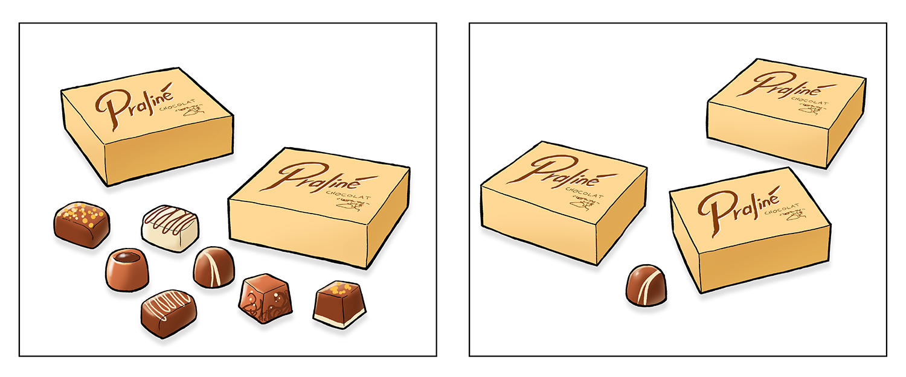
Tegning: Hans Ole HerbstI hver af de to sorte rammer er der nogle æsker og nogle løse stykker chokolade. Alle æskerne indeholder det samme antal stykker chokolade. Der er lige mange stykker chokolade i hver af de to sorte rammer.
Hvor mange stykker chokolade er der i hver æske?
Opgave 7
Hvilket tal er størst? (sæt X)
|
0,08 |
0,31 |
0,29 |
0,067 |
0,101 |
Opgave 8
Opgave 9
Hvad koster trøjen på udsalg?
Opgave 10
 Tegning: Hans Ole Herbst
Tegning: Hans Ole Herbst
150 g hvedemel
3 dL mælk
4 æg
1 teskefulde vaniljesukker
2 teskefulde sukker
Hvor mange deciliter mælk skal Hugo bruge?
Hvor mange teskefulde sukker skal Vilma bruge?
Opgave 11
Hvilket af følgende udtryk er en rigtig omskrivning af 3x + 4x +2?
Sæt X
|
7x + 2 |
9x |
9 |
7x^2 + 2 |
9x^2 |
Opgave 12
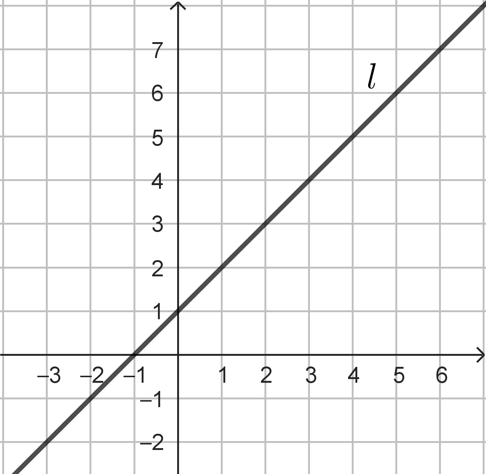
Figuren viser grafen for en linje l.
Hvad er ligningen for linjen?
Sæt X
|
y = x |
y = 3x |
y = 1 |
y = 2x + 2 |
y = x + 1 |
Opgave 13
Opgave 14
Skitsen viser et rektangel.
Hvor stor er omkredsen af rektanglet?
Opgave 15
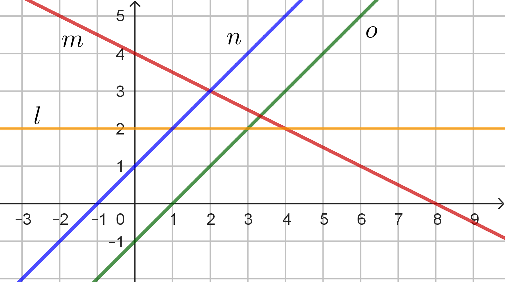
Hvilke to linjer skærer hinanden i punktet (3,2)?
Sæt to X-er
|
l |
m |
n |
o |
Opgave 16
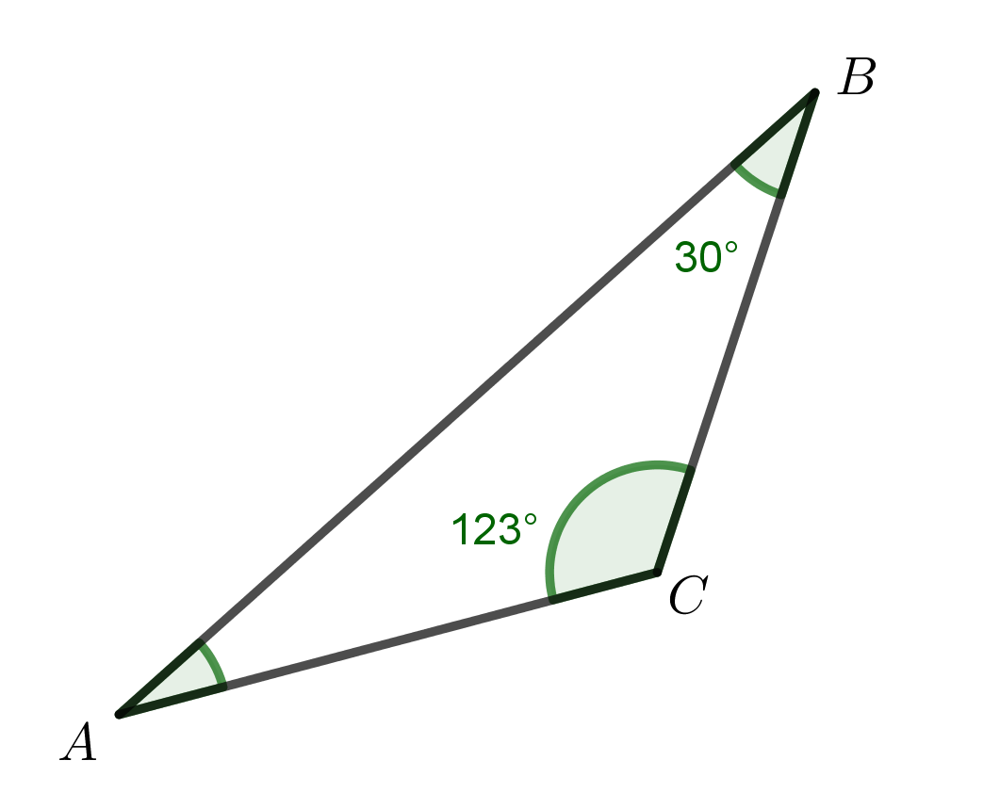
Opgave 17
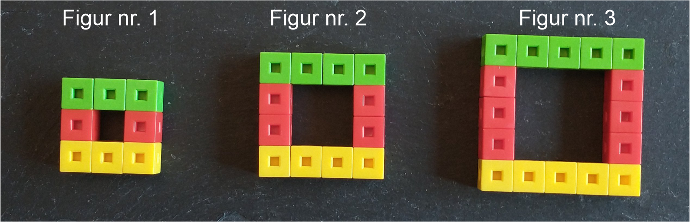
Billedet viser de tre første figurer i en figurfølge. Figurfølgen fortsætter på samme måde, som den er begyndt.
Hvilken figur indeholder 28 centicubes?
Opgave 18

Hvor mange elever fik karakteren 4?
elever.
Hvad er typetallet?
Bestem gennemsnitskarakteren for de 20 elever.
Opgave 19
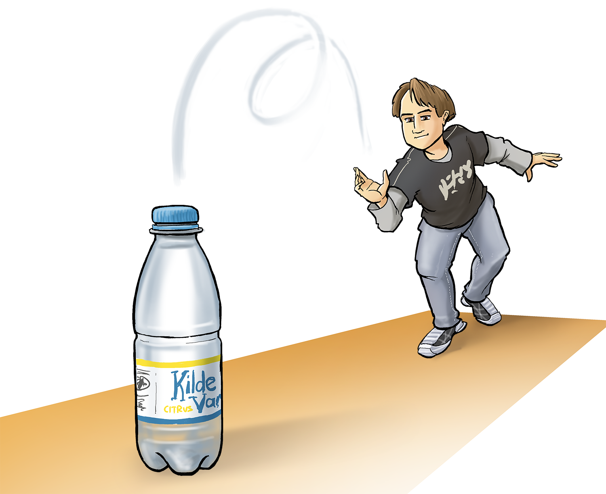
Tegning: Hans Ole HerbstPelle laver et eksperiment, hvor han prøver at kaste en flaske, så den drejer
rundt i luften én gang og lander stående.
Han kaster 12 gange. Flasken lander stående 3 gange.
Hvor stor er sandsynligheden for, at flasken lander stående, ifølge Pelles eksperiment?
Fysik/kemi
Prøven i fysik/kemi består af 21 opgaver, og du kan opnå 1 eller 2 point i hver enkelt opgave. De 21 opgaver er fordelt på 5 områder indenfor fysik/kemi. Du kan samlet få op til 25 point.
Grundstoffernes periodesystem findes sidst i sættet.
1. Atomer og grundstoffer
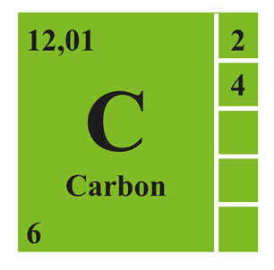
Figur 1.a: Carbon fra Grundstoffernes periodesystem.| Mulige ord |
| elektroner, ioner, protoner, molekyler, neutroner |
| I en atomkerne er der , som er positive. I kernen er der også , som er neutrale. Rundt om atomkernen kredser i skaller. |
|
▾
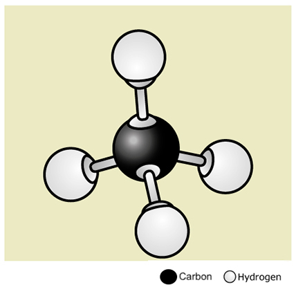 |
▾
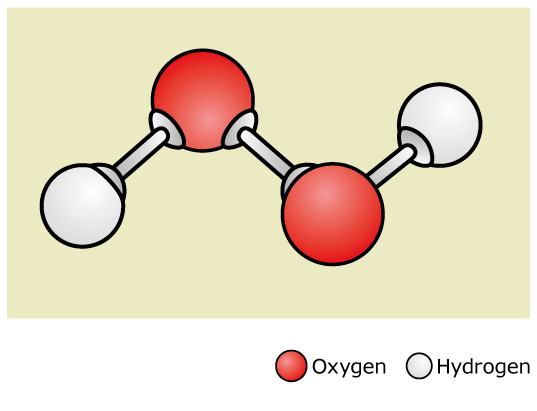 |
2. Æblemost
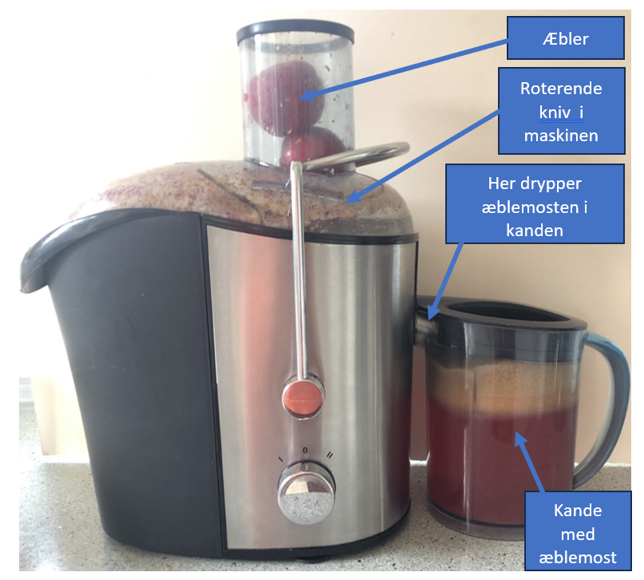
Figur 2.a: Maskine til fremstilling af æblemostHvilken af disse energiomsætninger finder sted, når kniven i maskinen drejer rundt?
| Energiomsætning | Sæt X |
| elektrisk energi → kemisk energi | |
| elektrisk energi → kinetisk energi | |
| potentiel energi → kinetisk energi |
Hvilken kraft bevirker, at æblemosten drypper ned i kanden?
| Kraft | Sæt X |
| tyngdekraften | |
| centrifugalkraften | |
| jordkraften |
Æblemosten afkøles i et køleskab.
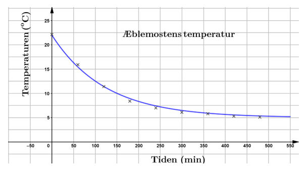
Figur 2.b: Afkølingskurve for æblemost.| Sæt X | |
| gas → fast form | |
| fast form → gas | |
| væske → fast form | |
| væske → gas |
3. Kaliumnitrat
En elev vil undersøge kaliumnitrats opløselighed i vand.
Eleven har tilsat så meget kaliumnitrat, at der er bundfald i reagensglasset. Eleven
undersøger, hvordan temperaturen påvirker opløseligheden, og får resultaterne der
ses i figur 3.a.
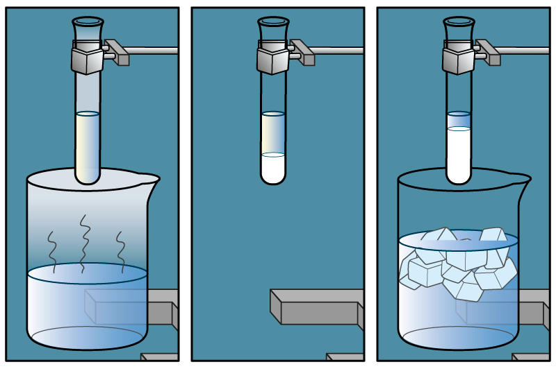
Figur 3.a: Opløselighed ved forskellige temperaturer.Når kaliumnitrat opløses i vand, så deler den sig i to ioner, kaliumion (K+) og nitrat (NO3-).
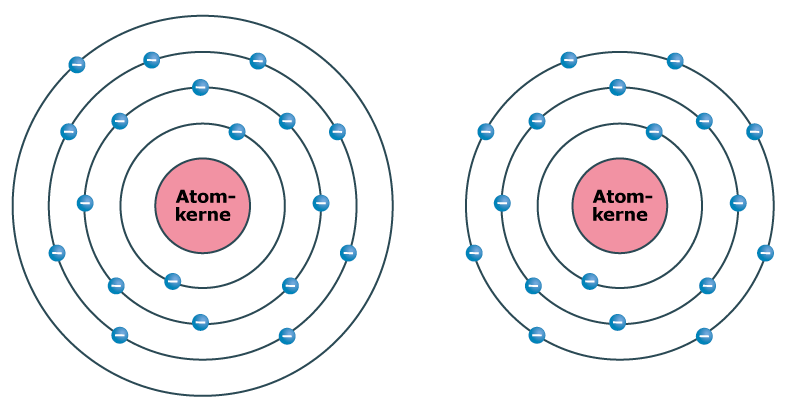
Figur 3.b: Kalium og kaliumion.Beskriv forskellen på kalium (K) og en kaliumion (K+). Anvend figur 3.b.
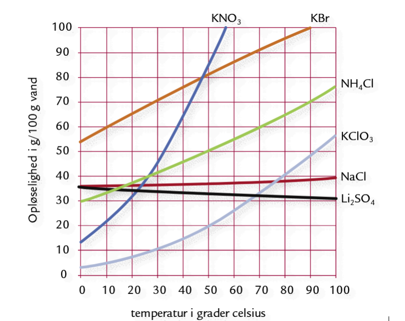
Figur 3.c: Opløselighed ved forskellige temperaturer (Kilde: Basiskemi C)Hvor meget kaliumnitrat (KNO3) kan der opløses i 100 g vand ved 40 °C?
Ionforbindelser inddeles i 2 grupper. De er letopløselige, hvis der kan opløses mere end 2 g pr. 100 gram vand ved 20 °C, ellers er de tungtopløselige.
Hvilken gruppe tilhører kaliumnitrat (KNO3)?
| Sæt X | |
| tungtopløselig | |
| letopløselig |
4. Ethanol som brændstof til biler
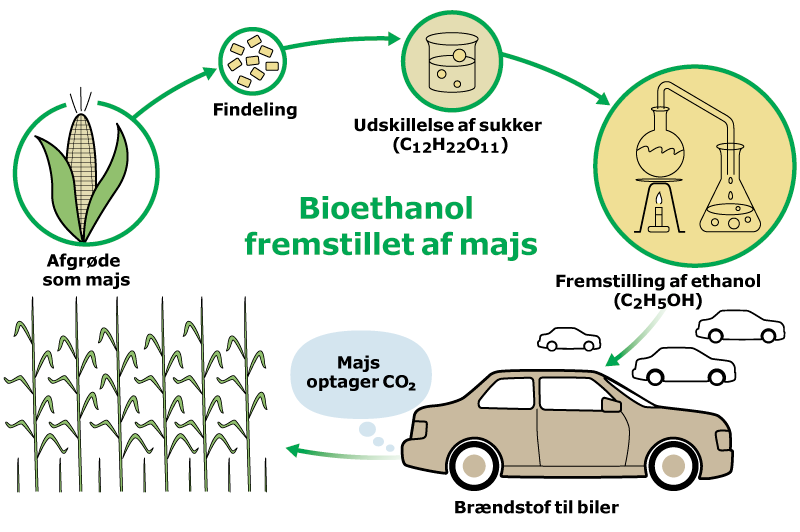
Figur 4.a: Bioethanols kredsløbHvad viser modellen om bioethanols kredløb? Anvend figur 4.a. Sæt 2 X.
| Udsagn | Sæt X |
| Majs kan anvendes til foder. | |
| Majs optager CO2 under vækst. | |
| Benzin kan fremstilles ud fra sukker. | |
| Biler, der kører på bioethanol, udleder CO2. |
En gruppe elever vil undersøge brændværdien af ethanol. De hælder ethanol i en spritbrænder. De lader ethanolen opvarme vand.
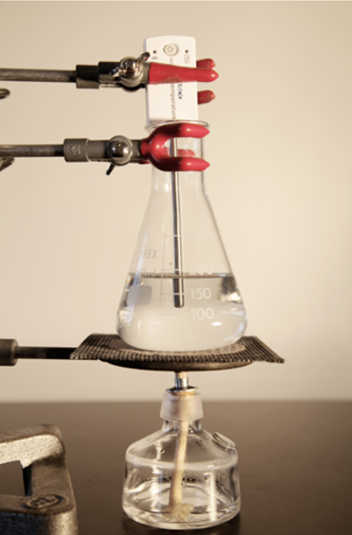
Figur 4.b: Elevernes opstilling.| Sæt X | |
| Bunsenbrænder | |
| Ethanol | |
| Konisk kolbe | |
| Bægerglas | |
| Vægt | |
| Temperatursensor |
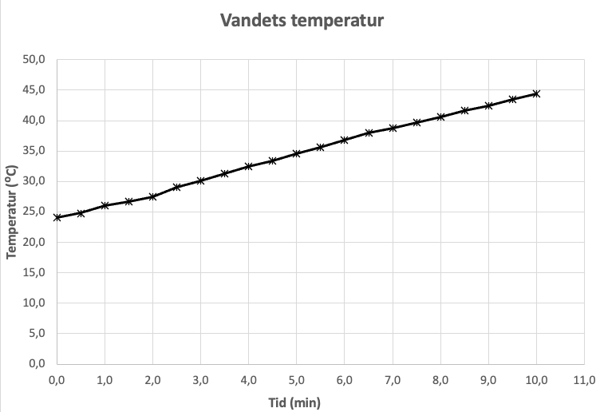
Figur 4.c: Vandets temperatur som funktion af tiden.Eleverne tegner en graf over vandets temperaturstigning.
| Brændsel | Brændværdi kJ/g |
|---|---|
| Benzin | 44,4 |
| Ethanol | 26,8 |
| Halm | 14,7 |
| Hydrogen | 131,1 |
| Flaskegas | 48,0 |
| Tørt fyr/gran | 15,5 |
| Udsagn | Sæt X |
| Temperaturen ville stige mere end, da de anvendte ethanol. | |
| Temperaturen ville stige mindre end, da de anvendte ethanol. | |
| Temperatur en ville stige nøjagtig lige så meget, som da de anvendte ethanol. |
| Sæt X | |
| Forbrænding af bioethanol udleder oxygen (O2). | |
| Bioethanol som brændstof kaldes CO2-neutral. | |
| Bioethanol er et fossilt brændstof. |
5. Radioaktivitet
Hvilken slags stråling udsender atomkernen i følge figuren?
Figur 5.a viser to atomkerner der udsender radioaktiv stråling.
| Atomkerne | Alfastråling | Betastråling | Gammastråling |
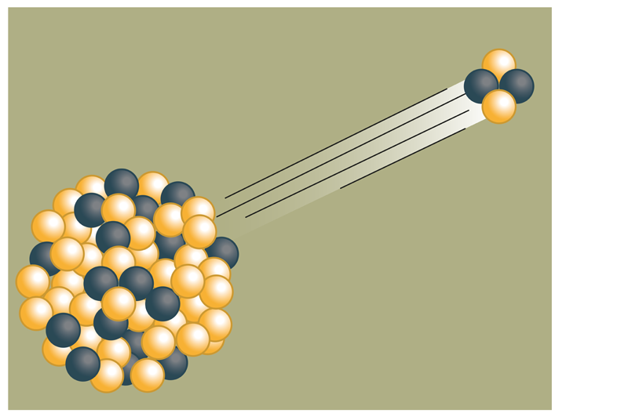 |
|||
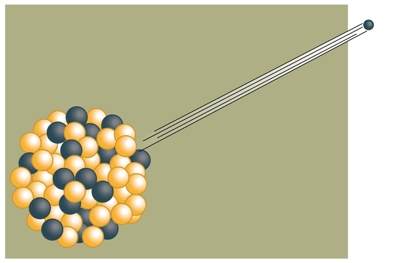 |
Indsæt de korrekte ord i den følgende tekst. Der er angivet flere ord, end du har brug for.
| Mulige ord |
| radon, guld, jern, Mars, Jupiter, Solen, elevatoren, røntgenundersøgelser, blodprøver, bomuld, nylon, bly |
| Til daglig bliver vi hele tiden påvirket af stråling. Det stammer blandt andet fra undergrunden, hvor det er som bidrager. Men noget kommer også fra Universet, hvor det er , som bidrager. På et hospital kommer bidrag fra . For at beskytte personalet på hospitalet mod strålingen bruger de beklædning fremstillet af . |
Oplysninger til brug for Copydan
Anvendt materiale i Dansk:
Dorte Mosbæk: ”Hun havde ’hele pakken’, men var ikke lykkelig. Så tog hun en drastisk
beslutning”.
Heartbeats.dk
24.september 2024
Anvendt materiale i engelsk:
Image credit: “Lagoon Cruises”, Hartley’s Crocodile Adventures, viewed September 2024.
(https://www.crocodileadventures.com/explore/activities)
Dette prøvesæt er omfattet af ophavsretten, jf. ophavsretslovens § 1.
Prøvesættet må alene anvendes til den på prøvesættet anførte prøve.
Al anden anvendelse af prøvesættet, herunder visning eller deling f.eks. via
internettet,
sociale medier, portaler og bøger, udgør en krænkelse af Børne- og
Undervisningsministeriets
og evt. tredjemands ophavsret og er ikke tilladt.
Overtrædelse af ophavsretten kan være erstatningspådragende og/eller strafbart.
Prøvesættet kan dog, efter at prøven er afsluttet, anvendes til undervisningsbrug på
uddannelser m.v. omfattet af den lovgivning, som Styrelsen for Undervisning og Kvalitet
administrerer.